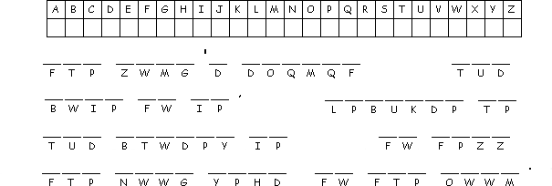

This Week: Nehemiah 8:1-3, 5-6, 8-10, Psalm 19, 1 Corinthians 12:12-31a, Luke 4:14-21
Elementary School Pew-work
E Y B E C A U S E
F L
|
Word ListOPPRESSED RECOVERY PROCLAIM CAPTIVES ANOINTED RELEASE BECAUSE SPIRIT SIGHT FAVOR BRING BLIND YEAR UPON SENT POOR NRSV NEWS LUKE LORD GOOD FREE THE LET HAS AND TO OF ME IS |
(Luke 4:18-19) "The Spirit of the Lord is upon me, because he has anointed me to bring good news to the poor. He has sent me to proclaim release to the captives and recovery of sight to the blind, to let the oppressed go free, to proclaim the year of the Lord's favor." (NRSV) |
from www.geocities.com/lectionarypuzzles/ free to distribute for free with this notice. Words are in a straight line left to right or top to bottom |
||
Where did Jesus teach?___________________________________________________
Where had Jesus grown up?_______________________________________________
Which scroll did Jesus read from?__________________________________________
What did Jesus say about the lesson? ______________________________________
________________________________________________________________________

Created by Puzzlemaker at DiscoverySchool.com
Next week: Jeremiah 1:4-10 Psalm 71:1-6 1 Corinthians 13:1-13 Luke 4:21-30